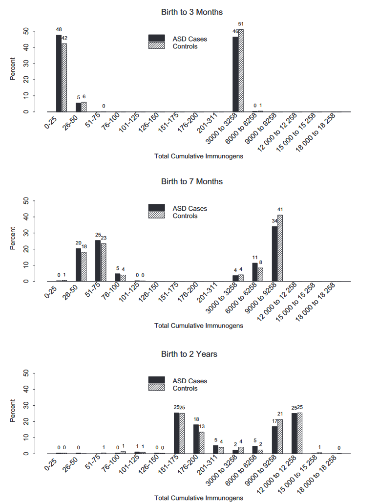

with credible, academic sources.
Site still under development. Contribute:
This has been disproven over and over again. A study done in 2013 isolated the antibody stimulating proteins (ASP) found in vaccines and cross referenced the vaccination records of 256 children with autism and 752 control children. By identifying what vaccines these children were receiving, they were able to see which proteins the children were exposed to in the following groups: 0-3 months, 0-7 months, 0-2 years.
Using this information they found no connection to autism. All groups returned extremely similar percentages of autistic children and control children in the amount of ASPs administered.
Summary: Children were exposed to 0-6258 ASPs from ages 0-3 months, 0-9258 ASPs from ages 0-7 months, and 0-12258 ASPs from 0-2 years. In the charts below, you can see no significant correlation between ASP exposure and Autism as often speculated.
Additionally, the original study that first said vaccines cause autism was in fact retracted by many of it's authors.
Mercury, methylmercury, and ethylmercury are different. Similar to how sodium and chloride (toxic elements), and sodium-chloride (aka table salt) are different. Just because it has "Mercury" in the name does not mean it has the same effect as all forms of mercury.
Vaccines contain thimerosal-Hg, which gets turned into ethylmercury (EtHg) in the body. The lower half-life in EtHg (less than one week) as opposed to methylmercury (6 weeks) means it does not spend as much time in your body and has a significantly lower neurotoxic effect.